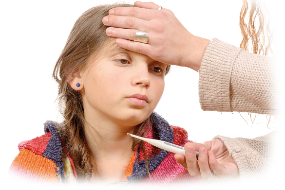
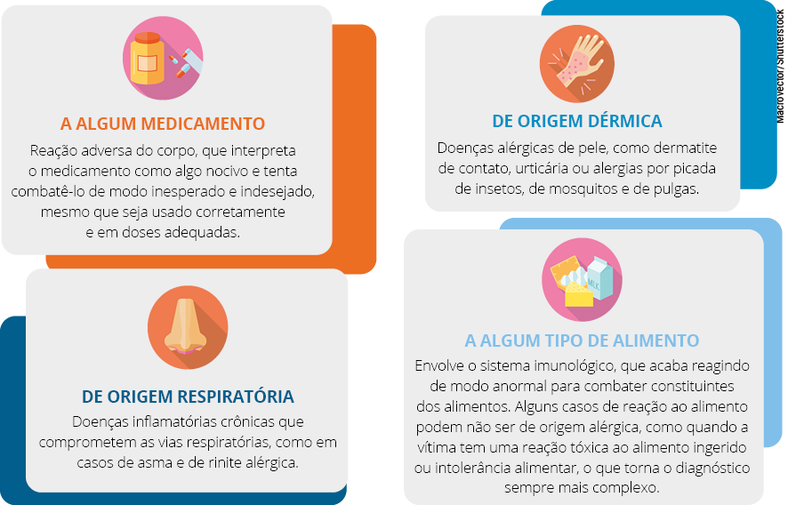
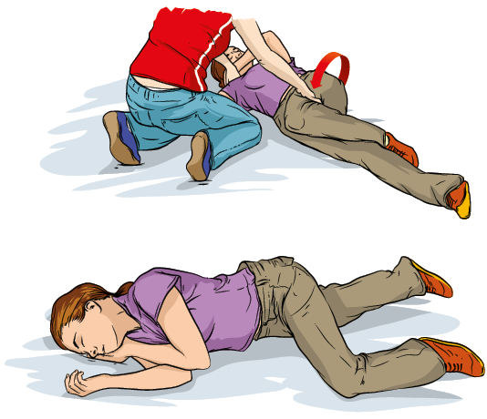
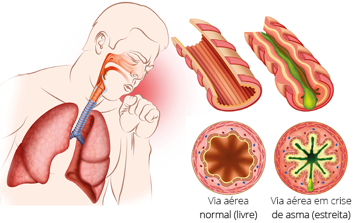

Importante
Algumas emergências clínicas podem ser bastante comuns no ambiente escolar, necessitando de medidas simples de primeiros socorros, nem sempre sendo justificativas para o acionamento dos serviços de emergência.
Quando falamos de emergências clínicas, consideramos todas as situações que requerem atendimento e auxílio à vítima e que acontecem devido a uma alteração de seu metabolismo, causada pelo próprio organismo como mecanismo de compensação (por exemplo, febre para combater um vírus) ou por fatores externos que influenciam a maneira de o corpo agir (febre causada por exposição prolongada ao sol).
O difícil das emergências clínicas está em saber reconhecer as alterações do metabolismo e sinais vitais, identificando aquilo que está errado unido ao conhecimento que se tem quanto ao histórico da vítima. Fato é que, mesmo que falemos da mesma emergência clínica, os sinais e sintomas podem ser variados e manifestados em tempos diferentes conforme a vítima, sua faixa etária, questões de imunidade e as particularidades de seu metabolismo, simplesmente porque somos diferentes uns dos outros. Logo, o que pode ser simples para alguns, pode ser grave para outros. O que pode se manifestar com sintomas simples para alguns, pode levar outros à morte.
Figura 1 – A febre é um dos sintomas clínicos mais comuns nos alunos e pode sinalizar uma infinidade de situações.
PHILIPIMAGE/Shutterstock
Assim, em todo e qualquer caso clínico, pareça ele simples ou não, há necessidade de informação e de contato com os pais e/ou familiares, para os deixar cientes do que está acontecendo com a criança e para que assumam a responsabilidade de buscar orientação médica e o devido tratamento em tempo oportuno.
Embora algumas situações clínicas nas crianças se manifestem dentro do ambiente escolar, o cuidado com a saúde delas não é responsabilidade da escola. Assim, os pais e/ou familiares precisam ser acionados, afinal criança doente não produz, ela fica sensível e pode piorar a qualquer momento. Inclusive, evoluções graves de saúde podem ocorrer se a criança não for devidamente atendida e tratada, e isso é uma responsabilidade da família, não da escola.
É certo que a escola deve identificar sinais e sintomas e acionar o atendimento especializado quando julgar necessário, além de acionar os pais/familiares para que venham buscar a criança. É evidente que a escola deve também proporcionar situações de prevenção dessas ocorrências e saber como proceder de maneira correta e eficaz frente aos agravos de saúde por meio de ações assertivas em primeiros socorros (sem, é claro, substituir o atendimento especializado). O que não é certo é os pais enviarem seus filhos doentes ou com sinais vitais alterados para a escola, com a justificativa de que lá estão sendo assistidos enquanto eles trabalham, pois “qualquer coisa, a professora liga”.
E se a simples febre evoluir para crise convulsiva? E se o chiado no peito evoluir para crise de asma? E se a apatia for uma hemorragia interna? E se a tontura gerar uma queda? E se a tosse for causada por um vírus contagioso? Enfim, há uma infinidade de justificativas para que uma criança com mal-estar não seja enviada para a escola até estar livre de riscos. Nesta seção falaremos das situações clínicas mais comuns no ambiente escolar, apontando suas definições, suas particularidades, seus sinais e seus sintomas, além da conduta do leigo em primeiros socorros.
Todos nós já tivemos a sensação de desmaio em algum momento. Isso ocorre por uma redução da atividade cerebral pelas mais variadas causas. Há aquela sensação de que não estamos muito bem ou estamos indispostos e precisamos nos sentar; percebemos que a visão está ficando turva e escura e nos sentimos com tontura ou ainda que estamos perdendo as forças e a qualquer instante podemos desabar. Quem nos vê nessa situação percebe que estamos suando frio, com a fisionomia nitidamente abalada e pálida. Por fim, temos a perda de consciência.
O desmaio é caraterizado como qualquer perda de consciência de curta duração com presença de movimentos respiratórios e de batimentos cardíacos. Diferentemente de uma parada cardiorrespiratória, nas situações de desmaio não há necessidade de manobras específicas para que a vítima retorne à consciência.
O desmaio também é conhecido, no meio médico, como síncope. Entre os tipos de síncope, o mais comum é chamado de síncope vasogênica, que tem como característica a queda da pressão arterial, estando relacionada principalmente ao público adulto. Já nas crianças o episódio de desmaio mais comum é aquele causado por trauma, podendo acontecer também após uma crise de asma, de hipoglicemia, engasgo e em situações como após uma crise intensa de choro.
Porém, de modo geral, as causas do desmaio – para qualquer faixa etária – podem ser ainda fatores emocionais, calor excessivo, esforço físico intenso, dor etc. Embora os sinais e os sintomas do desmaio sejam comuns, as causas podem ser as mais diversas, pois dependem de fatores extrínsecos e intrínsecos e do metabolismo da vítima, o qual é diferente para cada pessoa.
Síncope é definida pela perda transitória da consciência, ocasionada pela hipoperfusão (baixa perfusão) cerebral global e caracterizada por rápido início, curta duração e recuperação completa e espontânea, sendo que, de maneira geral, todas as formas de síncope apresentam diminuição ou rápida interrupção do fluxo sanguíneo cerebral. A síncope corresponde a mais de 3% de todas as consultas ao pronto-socorro, podendo ser uma condição benigna ou um marcador de grande risco de morte súbita (MARTINS et al., 2015).
Figura 2 – Na perda momentânea de consciência ainda é possível encontrar os sinais vitais.

CGN089/Shutterstock
Talvez você conheça alguém que, quando exposto a um fator emocional, simplesmente desaba no chão, por exemplo, ao ver um ferimento com sangue, ao receber uma notícia ruim ou ao levar um susto. A questão é a forma como cada um reage a essa exposição desagradável; enquanto alguns lidam de forma racional com as adversidades, outros desmaiam.
Logo, a qualquer momento, qualquer pessoa, independentemente da idade, pode passar por uma situação que a leve à síncope ou ao desmaio. Pode haver como base um problema de saúde ou somente fatores emocionais. Seja qual for a causa, atenderemos a essa vítima com os primeiros socorros realizados de maneira imediata, dando o suporte necessário para sua recuperação e segurança.
Ao reconhecermos a inconsciência de uma vítima, podemos tocá-la e tentar chamá-la para ver se há uma resposta. Em seguida:
É importante que esses passos sejam cumpridos a fim de verificar o estado da vítima, embora a ordem possa ser alterada.
Drp8/Shutterstock
Enquanto estiver desacordada, a vítima não precisa de um copo de água ou água com açúcar, de água no rosto, cheirar tecido embebido em álcool ou sentir cheiro de borra de café, como popularmente muitos acreditam. Ela precisa somente de alguns instantes para retornar à consciência.
Quando a vítima se recuperar, não precisamos nos preocupar em dar algo para ela comer ou beber. É importante permitirmos que ela permaneça deitada mais algum tempo e vá se sentando aos poucos, até que se sinta bem para, então, levantar-se. Ela pode relatar fraqueza e sensação de formigamento em alguns membros, além de ficar um pouco confusa quando abrir os olhos. O socorrista leigo pode conversar com a vítima e buscar informações que possam ser repassadas à equipe médica, que já deve ter sido acionada.
Uma crise de hipoglicemia pode acontecer em qualquer faixa etária, mas a correta identificação da situação se relaciona à sua causa. A vítima de hipoglicemia pode estar enquadrada em duas situações: ser portador de diabetes ou estar há muito tempo sem se alimentar (chamada de hipoglicemia de jejum), devido à baixa quantidade de açúcar no sangue.
Tratando-se do ambiente escolar, devemos ser realistas, uma vez que, dependendo do contexto social, algumas escolas podem apresentar esse tipo de situação clínica com maior frequência. Pois enquanto algumas crianças não se alimentam bem porque não querem, outras simplesmente não se alimentam porque não têm o que comer ou dependem da refeição oferecida pela escola. Estamos falando de crianças e jovens, mas esses fatores sociais podem valer também para professores, quando não têm tempo ou oportunidade de fazer uma alimentação adequada. Além de fatores alimentares, a ingestão de bebida alcoólica em jejum também pode desencadear a crise.
Figura 3 – Crises hipoglicêmicas podem ocorrer em função de jejum ou de mais de 3 horas sem comer.
Monkey Business Images/Shutterstock
Fato é que, sejam crianças, jovens ou adultos, o gasto energético sempre existe. O nosso corpo funciona tentando atender às demandas a que é exposto, mas se não estiver alimentado e nutrido, sucumbirá a elas. E é assim, em meio à correria do dia a dia, ou na prática de atividades físicas em jejum, que pode haver a baixa do nível de glicose no sangue e a vítima apresentar uma crise de hipoglicemia.
Os sinais e sintomas se assemelham muito aos de desmaio, aliás a crise de hipoglicemia pode resultar em um episódio de desmaio. Precisamos ficar atentos aos sinais de palidez, fraqueza, tremor, palpitação, sonolência e tontura nos alunos, especialmente após a realização de atividades físicas, em que houve um maior gasto energético.
Ao suspeitarmos de crise de hipoglicemia, podemos questionar o aluno se ele é diabético, pois é uma situação comum nessa patologia, e quando foi a última vez que se alimentou.
No caso de a vítima ser diabética:
Agora, se a causa foi não se alimentar, praticar exercícios em jejum ou estar a mais de 4h sem comer:
No entanto, se a vítima desmaiar, não dê nada para ela comer ou beber. Nesse caso, afrouxe as roupas que pareçam apertadas, coloque-a em um ambiente ventilado e eleve seus membros inferiores a aproximadamente 20 cm do chão.
A alergia é caracterizada pela reação exagerada do sistema imunológico de indivíduos hipersensíveis diante da exposição a determinado agente ou substância. Esses agentes ou substâncias podem ser alimento, medicamento, veneno de insetos, pólen, mofo etc. Algumas pessoas têm uma predisposição genética a fatores alérgicos, o que pode ser uma condição tanto de nascença quanto adquirida ao longo da vida.
Figura 1 – Tipos de alergia e suas causas
Fonte: Elaborada pela autora.
Diante da reação alérgica de uma vítima, o socorrista leigo provavelmente não vai compreender as causas, e isso não é necessário. Ele precisa somente detectar os sinais e sintomas do processo alérgico e acionar imediatamente o serviço de atendimento médico de emergência, acompanhando os sinais vitais dela.
As manifestações de alergia podem ser variadas, conforme o tipo e a própria sensibilidade da vítima. Podem incluir alterações na cor da pele, dos lábios e das unhas, coceiras, câimbras, inchaço, dificuldade para respirar, pressão no peito, asfixia, edema nos olhos, na boca, na língua e na garganta, náuseas, vômitos e até confusão mental.
As pessoas que já conhecem seus processos alérgicos costumam agir de maneira preventiva e, quando a situação acontece, já identificam os sintomas e tomam as medicações ou condutas médicas indicadas para esse fim. Já as pessoas que têm uma reação alérgica inesperada tendem a ficar mais assustadas, sem saber o que fazer. Fato é que as vítimas devem ser direcionadas ao atendimento especializado imediatamente, para que o processo alérgico seja interrompido o quanto antes.
Como as manifestações alérgicas são diferentes de pessoa para pessoa, assim como a velocidade de evolução do quadro, a alergia sempre traz muito medo ao ambiente escolar. Nesse sentido, a maior recomendação que podemos deixar para nós, professores, é agirmos sempre preventivamente. Podemos perguntar aos familiares sobre condições específicas da saúde do aluno, para agirmos antecipadamente, evitando que ele se exponha a fatores de risco para alergia.
Por exemplo, a família avisa a escola que o filho de 8 anos tem alergia grave à amendoim e a qualquer alimento que o contenha. No entanto, um colega leva paçoca para a escola e oferece à criança alérgica. Talvez a criança saiba que não pode comer amendoim, mas não compreende que a paçoca leva esse ingrediente e aceita o alimento oferecido. Uma vez manifestados sintomas alérgicos, se a escola já conhece o histórico dessa criança, imediatamente aciona os pais, os serviços de emergência e faz o acompanhamento da evolução do quadro da vítima até que o atendimento especializado chegue.
Pode ser que os pais já tenham inclusive deixado a medicação disponível na escola junto a uma cópia da receita médica para ser administrada em casos emergenciais. Isso faz com que a criança seja medicada imediatamente e impeça o agravo da alergia. Mas quando não conhecemos o histórico, não conhecemos possíveis medicamentos prescritos para agir em casos extremos etc., a criança pode evoluir para quadros graves da alergia enquanto o socorro não chega.
Não há manobra específica em primeiros socorros para reversão desses quadros gerais de alergia. A indicação, após o reconhecimento da reação anafilática, é chamar o socorro e acompanhar os sinais vitais da vítima e a evolução do quadro até que ela receba o devido atendimento. Caso tenha medicação prescrita para essa situação, devemos administrá-la imediatamente e monitorar os sinais vitais da vítima até que o socorro chegue.
Conforme a velocidade de evolução da reação anafilática, pode ser que a vítima tenha uma parada cardiorrespiratória. Devemos ficar atentos para, a partir daí, iniciar as compressões torácicas.
Quando a temperatura do corpo humano ultrapassa os 40 graus, o mecanismo de transpiração falha e a vítima não consegue se resfriar sozinha. Isso acontece porque, diante do aumento rápido da temperatura corporal, há perda de nutrientes (sais e água) pela vítima, os quais são fundamentais para a manutenção e o equilíbrio do organismo. Essa situação pode acontecer diante da exposição excessiva e prolongada ao calor intenso e ao sol, principalmente em clima quente e seco, gerando na vítima o que chamamos de insolação.
É comum identificarmos vítimas de insolação nas seguintes situações: pessoas que passaram muito tempo expostas ao sol sem a devida hidratação e sem o uso de protetor solar; pessoas que praticaram atividade física intensa, gerando cansaço extremo; e principalmente pessoas que, em qualquer uma dessas situações, ficaram sem se hidratar por bastante tempo.
A pessoa exposta a esses fatores pode apresentar, inicialmente, a elevação da temperatura do corpo, ficando com a pele vermelha e quente, com sensação de muito calor, cansaço e até mesmo náuseas. Como forma de mecanismo de compensação, o corpo pode também provocar o aumento da frequência cardíaca e da frequência respiratória na vítima.
Figura 5 – A ingestão de água em dias quentes e durante as atividades físicas pode prevenir a insolação.

Rob Hainerr/Shutterstock
Nas aulas de educação física, quando é mais comum expor a criança a ambientes abertos, é importante cuidarmos com essa situação. Até porque as crianças não têm costume de se hidratar sem que alguém as lembrem de fazer isso. Portanto, é preciso que o professor previna e, em dias muito quentes, evite a exposição prolongada ao sol, sempre orientando os alunos a levarem suas garrafas de água nas aulas práticas. Desenvolver na criança o costume de se hidratar pode ser útil para toda a vida.
Nos casos de insolação, os primeiros socorros envolverão medidas que tenham como objetivo baixar lenta e gradativamente a temperatura corporal da vítima, até que ela seja socorrida e atendida pelo serviço médico especializado. Entre essas medidas, citamos:
O corpo humano está constantemente controlando sua temperatura corporal. Existe uma área no cérebro chamada hipotálamo, que ajuda a manter os órgãos internos na temperatura adequada, como se fosse um termostato.
Essa temperatura interna é de aproximadamente 37 graus Celsius, e o objetivo de mantê-la é atingido quando há um equilíbrio entre a perda e a produção do calor dos tecidos. Se um agente externo ou uma doença agride o organismo, o hipotálamo eleva a temperatura em alguns graus como forma de reação contra algo que esteja errado. Essa elevação da temperatura interna não é considerada uma doença, mas sim um sinal de que o corpo está passando por alguma anomalia e precisa combatê-la.
Para fins práticos e tomada de condutas, consideramos febre quando há elevação da temperatura corporal (axilar) > 37,8ºC. Hiperpirexia é o termo utilizado para febres > 41,5ºC. Hipertermia é um aumento de temperatura corporal que ultrapassa a capacidade do corpo de perder calor, causado por exposição excessiva ao calor ou pela produção endógena de calor de forma exacerbada. A hipertermia é caracterizada pela falência dos mecanismos periféricos em corrigir o aumento da temperatura corporal frente a uma produção metabólica exagerada de calor, ao calor excessivo do ambiente ou à dissipação prejudicada de calor. (MARTINS et al., 2015, p. 304)
Na maioria das vezes, os episódios de febre estão acompanhados de doenças infecciosas que podem ser comuns e de curta duração. Porém isso não é regra, já que algumas vezes a febre sugere, na verdade, um sintoma de enfermidade diferente e grave.
Para muitas pessoas, a febre é motivo de desespero, nem tanto por seus sintomas, mas pelo desconhecimento de sua causa. Alguns episódios podem ser mais prolongados, e outros retornam após dias de tratamento.
Figura 6 – A febre requer atenção e cuidado, pois pode indicar doenças graves.

Michael C. Gray/Shutterstock
Enquanto a febre está presente, a preocupação é constante. Conforme a temperatura aumenta, o medo das consequências dessa elevação também aumenta. Quando ultrapassa os 40 graus Celsius, até mesmo delírios, confusões mentais e convulsões febris podem se fazer presentes.
As crianças são muito mais fortes que os adultos quando o assunto é febre. Embora muitos pais tenham medo de que a febre aumente até que gere convulsões, é importante saberem que as crianças que convulsionam por febre podem ter uma predisposição para isso, ou seja, com pouco mais de 37,5 °C, uma criança com essa predisposição pode convulsionar, mas o aumento da febre não obrigatoriamente gera crises convulsivas.
Diante de episódios de febre, é importante que a vítima seja encaminhada para o atendimento médico para que seja feita uma análise do quadro e se tenha um diagnóstico que permita a administração de medicação apropriada para cada caso.
Lembramos que leigos não são autorizados a prescrever medicamentos. Isso significa que a escola não pode ter um antitérmico em sua caixinha de primeiros socorros. Não é função da escola medicar, até porque isso poderia piorar o quadro da vítima, já que não temos como saber a causa da febre. Assim, devemos agir acionando os pais para que peguem seus filhos com febre na escola e levem até o hospital. Se os familiares se negarem a ir até a escola, independentemente do motivo, devemos ligar para o serviço de emergência para que venham prestar o devido atendimento, mas nunca medicarmos ou agirmos por conta própria. O que está ao nosso alcance, nesse caso, com o objetivo de gerar o máximo de conforto à criança e impedir que a temperatura aumente, é buscarmos meios alternativos de tentar baixar a temperatura corporal, com compressas frias em região frontal, axilas e virilha, por exemplo.
De preferência, são importantes ações da escola que orientem os pais a não enviarem seus filhos quando estiverem doentes ou com febre. Embora tenhamos empatia e saibamos que os pais precisam trabalhar, às vezes sem conseguirem ignorar suas agendas nem mesmo por questões de saúde dos seus filhos, ir para a escola com esses sintomas pode ser muito prejudicial. A criança com febre não se sentirá disposta, o que prejudicará o aproveitamento do conteúdo, favorecendo a apatia e reduzindo a produção durante a aula. O professor ficará preocupado, terá que aferir a temperatura e proporcionar medidas que ajudem a baixar a febre da criança. Além disso, as demais crianças estarão expostas, correndo risco de contraírem doenças, afinal não sabemos a origem da febre, que pode ser viral e, portanto, contagiosa.
Os casos de febre não têm uma orientação específica, contudo algumas ações podem ajudar a baixar a temperatura corporal da criança:
A hidratação é fundamental, pois a febre leva à perda de água no organismo, e sem líquido não há uma regulação térmica adequada. Além disso, é importante deixar a vítima em repouso, tendo em vista que a febre gera maior gasto energético e aumento dos batimentos cardíacos, o que sobrecarrega o organismo. Não fique com a criança com febre no ambiente escolar. Oriente os pais ou responsáveis que venham buscá-la e procurem atendimento médico.
Na grande maioria das situações, o envenenamento acontece por uma causa acidental. São tantas as possibilidades de envenenamento que não existem antídotos específicos para cada tipo, por isso é importante conhecermos a substância envolvida para que o tratamento seja realizado da melhor forma possível.
As diversas formas de envenenamento podem ter como consequência a intoxicação da vítima, gerando comprometimento do organismo. Há possibilidade de ingestão e inalação de produtos tóxicos, além de intoxicação por produtos absorvidos pela pele ou injetados. Na ingestão, podemos citar os casos que envolvem medicamentos, agrotóxicos, substâncias químicas, alimentos contaminados e derivados de petróleo. Na inalação, podemos citar os diversos tipos de gases e poeiras que sejam tóxicos. Os produtos tóxicos que podem ser absorvidos pela pele ou mucosa envolvem inseticidas e agrotóxicos, enquanto os injetáveis envolvem tanto drogas injetáveis quanto picadas de insetos, como aranha ou escorpião.
Figura 7 – A intoxicação ou o envenenamento podem acontecer pela ingestão de frutos, cogumelos e outros itens comuns nas áreas abertas da escola.

Dmitry Naumov/Shutterstock
No Brasil, os medicamentos são os principais agentes responsáveis, segundo estatísticas mais recentes. Segue-se, de modo expressivo, as intoxicações por produtos domissanitários, pesticidas e produtos químicos de uso industrial. Algumas características, de acordo com a faixa etária, são importantes até para a decisão sobre as medidas preventivas, a saber (LA TORRE et al., 2013):
Quando o atendimento ao envenenado é iniciado, a primeira coisa a ser feita é a verificação da via de administração e do veneno em questão. Após a abordagem inicial ou primária, a vítima deve ser removida do fator de risco imediatamente, para que seja reduzida a exposição ao veneno.
Nesse momento, desde que saibamos qual é a origem da intoxicação, o ideal é ligarmos para o atendimento de emergência do fabricante do produto, cujo telefone se encontra nos rótulos e nas embalagens, por determinação da Agência Nacional de Vigilância Sanitária (Anvisa). O serviço de atendimento por intoxicação é público e gratuito e permite que qualquer pessoa ligue e tire dúvidas relacionadas ao assunto, não somente em emergências. Como se trata de um canal de ajuda especializado, os atendentes têm condições para orientar sobre os primeiros socorros específicos, focando o objeto de intoxicação do paciente e a orientação do tratamento terapêutico mais apropriado para cada substância.
Essa informação obtida com os fabricantes dos produtos é importante, pois, na maioria das vezes, eles já têm as recomendações de como agir em casos de inalação, ingestão, intoxicação ou injeção. Embalagens também podem conter outras orientações, por exemplo: quando em contato com a pele, algumas substâncias devem ser limpas com pano seco, e outras com água abundante; já quanto à ingestão de produtos, em alguns casos o vômito deve ser induzido, e em outros não.
Quando uma vítima está em crise convulsiva, basicamente o que está acontecendo é uma desordem cerebral devido a uma atividade elétrica anormal. Nesse momento, o cérebro não funciona normalmente, passando a enviar para todo o corpo estímulos ou espasmos musculares involuntários, caracterizando, assim, a crise convulsiva.
Quando a convulsão acontece de maneira isolada, é chamada de crise convulsiva, mas, quando acontece de modo repetido e recorrente, as vítimas são diagnosticadas com epilepsia, caso em que deve haver um acompanhamento e tratamento regular.
Crises epilépticas são problemas frequentemente encontrados nos setores de emergência, pois podem ser causadas por diversas situações na prática clínica, como distúrbios hidroeletrolíticos, lesões neurológicas agudas, efeito de medicamentos e outras. A probabilidade de um indivíduo apresentar uma crise epiléptica em qualquer momento da vida é relativamente alta. Esse risco é estimado entre 5% e 10%. Em muitos desses casos, um fator desencadeante de crises pode ser identificado e, uma vez removido, a crise não deverá recorrer. Outras vezes não se identifica um fator causal para a crise epiléptica, mas ainda assim muitos desses pacientes não voltarão a ter crises. Por fim, alguns indivíduos apresentam crises epilépticas espontâneas recorrentes e são, portanto, considerados epilépticos. (MARTINS et al., 2015, p. 575)
Diversas podem ser as causas dessa desordem cerebral. Nas crianças, por exemplo, as crises são mais comuns quando acontecem por origem infecciosa ou após um episódio de trauma – isso porque elas têm maior vulnerabilidade em adquirir infecções no sistema nervoso central, como a meningite. Em outras situações, doenças como sarampo, varicela e caxumba podem ter a convulsão como complicação. Há também as convulsões causadas por trauma cranioencefálico, decorrentes de quedas ou outros tipos de acidentes.
Já nos adultos, além das convulsões geradas por traumatismos cranianos, é comum haver causas como o uso abusivo de drogas e de bebidas alcoólicas, infecções, parasitoses e tumores cerebrais.
Quando uma crise convulsiva está se iniciando, geralmente a vítima dá um grito e, em seguida, tem a perda súbita de consciência, acompanhada do enrijecimento da musculatura do corpo, com movimentos de abalos dos membros, da cabeça e da face.
Figura 8 – Durante uma crise convulsiva, há contração e enrijecimento dos músculos.

CGN089/Shutterstock
Ao presenciar uma crise convulsiva, precisamos, no primeiro momento, verificar as condições e o ambiente em que a vítima se encontra para que ela não se machuque. Podemos protegê-la acolchoando o chão com almofadas, blusas ou objetos macios, especialmente próximos à cabeça, além de afastar móveis e objetos que possam ter contato com seu corpo.
Durante a crise, ela pode urinar ou defecar no local e morder a própria língua ou lábios quando os dentes ficarem cerrados – condição comum durante a crise –, o que chamamos de trismo. Porém, mesmo com o risco de fazer machucados e ferimentos na boca, nunca devemos tentar segurar a língua da vítima ou abrir sua boca para colocar panos ou objetos que impeçam a mordida ou os dentes cerrados. Ao colocarmos os nossos dedos ou a nossa mão dentro da boca da vítima em trismo na crise convulsiva, ela pode nos morder e nos tornarmos uma vítima, também precisando de ajuda e de primeiros socorros.
Em média, uma convulsão dura de 1 a 3 minutos. Após esse período, a vítima fica inconsciente por um tempo, podendo apresentar vômito, confusão mental e dor de cabeça conforme sua consciência é retomada. Depois da crise, a abordagem inicial é feita normalmente, acompanhando os sinais vitais da vítima (especialmente os batimentos cardíacos, por meio da pulsação, e a frequência respiratória). É importante colocarmos a vítima de lado, virando todo o corpo dela, e usarmos algo para apoiar a cabeça e permitirmos maior conforto a ela. Com a vítima lateralizada, evitamos a obstrução das vias aéreas pelo relaxamento da língua e, ainda, facilitamos seu posicionamento caso ela comece a ter episódios de vômito.
Figura 9 – Primeiros socorros na crise convulsiva
NoPainNoGain/Shutterstock
Nesse momento, podemos afrouxar as roupas que estiverem apertadas. Não tente acelerar o processo de retomada à consciência da vítima fazendo qualquer manobra ou oferecendo algo para ela ingerir ou cheirar, seja durante ou depois da crise. A retomada à consciência pode demorar alguns minutos, mas o importante é garantirmos, com o monitoramento dos sinais vitais, que a vítima esteja respirando.
O socorro deve ser acionado e aos socorristas devemos repassar todas as informações do ocorrido para que entendam a situação e conheçam as particularidades da crise. Entre as informações importantes, estão, por exemplo, se a pessoa bateu a cabeça quando caiu, quanto tempo durou, quantas crises teve dentro de um período de tempo, se a vítima teve algum sinal vital alterado (seja acima ou abaixo dos valores de normalidade), que tipo de movimento do corpo ocorreu durante a crise, como a pessoa reagiu após a crise, quanto tempo demorou para retornar à consciência etc.
O estreitamento dos bronquíolos (pequenos canais de ar dos pulmões) devido a uma inflamação é chamado de asma. Essa inflamação reduz e dificulta a passagem do ar, provocando contrações (ou broncoespasmos) e comprometendo a respiração, deixando-a difícil de ser realizada.
Quando a inflamação ocorre, esses canais de ar liberam mais muco, o que intensifica o problema respiratório, causando sintomas de tosse, falta de ar, chiado e aperto no peito. Nessa situação, a ação de expirar é mais custosa do que a de inspirar, uma vez que o ar contaminado ainda está nos pulmões e, com isso, causa uma sensação de sufoco no paciente, caracterizando a crise de asma.
Figura 10 – Durante a crise de asma, os brônquios se inflamam e reduzem a passagem de ar, causando sintomas como tosse.
ilusmedical/Shutterstock
Conforme La Torre et al. (2013, p. 839):
A asma é a doença crônica mais frequente na criança. Sua prevalência é aumentada em pacientes com menos de 2 anos de idade, com incidência crescente nas taxas de internação entre 1 e 4 anos de idade. A asma é uma doença heterogênea, em que não há um único agente causal. É uma doença poligênica em que a expressão fenotípica desses genes depende não apenas da interação entre eles, mas também de uma série de outros fatores ambientais (epigenética) que modificam sua suscetibilidade e gravidade.
As crises de asma apresentam diversas causas, embora seja uma doença com características genéticas. Normalmente, pessoas com histórico familiar de alergias são geneticamente predispostas a desenvolver quadros alérgicos, como rinite alérgica e asma.
A duração, a intensidade e a frequência da crise de asma aguda variam, refletindo na obstrução das vias aéreas em consequência de um dos seguintes fatores, de acordo com Karren et al. (2013):
Grande parte das pessoas asmáticas tem crises ao ser exposta a substâncias transportadas pelo ar, em que agentes são aspirados e irritam os brônquios, levando a um comprometimento ventilatório e, consequentemente, a uma crise. Esses agentes são, por exemplo, ácaros, poluição, pólen e fumaça de cigarro, assim como substâncias químicas, como tintas, desinfetantes e produtos de limpeza. Infecções virais, como resfriado ou gripe, também podem desencadear uma crise.
Outras causas incluem alimentos, conservantes e alguns aditivos, os quais podem, do mesmo modo, gerar alergias que levam a crises de asma. Algumas pessoas podem desencadear a crise quando expostas a atividades físicas, pois há um maior estreitamento das vias aéreas nos primeiros 5 a 20 minutos de exercício, o que torna mais difícil retomar o fôlego e respirar. Outras apresentam crise diante de fatores emocionais e psicológicos, o que torna ainda mais complexa a compreensão dessas causas.
Embora haja diversas causas para crises de asma, nos primeiros socorros o que realmente importa é o fato de sabermos como agir diante delas até que o socorro especializado chegue para dar continuidade ao atendimento – isso porque não sabemos em quanto tempo uma crise pode fadigar completamente a vítima, levando à perda de consciência e, inclusive, à parada respiratória. Após acionar o serviço de emergência, a prioridade será acalmarmos a vítima e mantê-la parada, para evitar o gasto de energia.
Fisiologicamente, o que acontece na asma é que, com a redução do calibre dos bronquíolos, a entrada e a saída de ar se tornam muito mais difíceis. Essa dificuldade respiratória é chamada de dispneia.
A dispneia, uma das queixas clínicas mais comuns, é definida como uma sensação de falta de ar, acompanhada de respiração trabalhosa. Por não ser um termo simples, nessa eventualidade as vítimas poderão relatar falta de ar, impossibilidade de respirar ou falta de fôlego. O problema comum entre todas essas vítimas é que o corpo sente a necessidade de mais oxigênio do que está recebendo (KARREN et al., 2013). Quando o corpo reconhece a redução de oxigênio, pode gerar na vítima a cianose (áreas periféricas do corpo roxas ou azuladas) e, consequentemente, o cansaço e a fraqueza.
Se o paciente já possuir uma indicação de uso de medicação ou broncodilatador (bombinha), ele deve fazer a utilização imediatamente para que haja o relaxamento da musculatura dos brônquios, permitindo que o ar volte a passar com facilidade para os pulmões e que a vítima consiga respirar com tranquilidade.
Figura 11 – Asma com uso de bombinha

sirtravelalot/Shutterstock
Nesse caso, espera-se que os familiares já tenham informado à escola quanto às ocorrências de crise de asma, indicando inclusive suas causas e as maneiras de agir quando identificados os primeiros sintomas. Para casos mais graves, os familiares já deixam aos cuidados da escola uma medicação (bombinha) devidamente prescrita pelos médicos e a orientação de como administrá-la. Isso porque, nos casos mais graves, a evolução do quadro pode ser muito rápida, levando a vítima ao desmaio e à parada respiratória em poucos minutos.
Porém, uma mesma bombinha de broncodilatador não serve para mais de uma pessoa, visto que a prescrição médica é individual, com dose específica e formas de usar devidamente indicadas pelo médico. Logo, a escola não pode ter uma bombinha de broncodilatador em sua caixinha de primeiros socorros para uso geral de seus alunos.
Temos que saber que essas situações, embora haja um fator causador pela predisposição de cada criança, podem acontecer sem aviso prévio. Caso não tenhamos uma medicação prescrita e autorizada, outros meios deverão ser utilizados para tentarmos amenizar a progressão do quadro de asma até que o serviço de atendimento especializado chegue para realizar o socorro.
Assim, procuramos deixar a vítima sentada em posição confortável em uma cadeira, com os braços livres e relaxados. Já as crianças pequenas podem ser posicionadas da mesma forma, mas no colo do professor. Isso porque, diante da crise respiratória, quando percebemos a falta de ar ou dificuldade para respirar, apoiamos nossas mãos nas pernas ou em algum objeto e, inconscientemente, fazemos com que isso aumente a nossa força para respirar, pois nessa posição passamos a utilizar músculos acessórios da respiração, localizados na região do trapézio e no pescoço.
O perigo disso está no fato de que, ao fazer mais esforço para puxar e soltar o ar, os alvéolos, que possuem certa propriedade elástica em sua estrutura, podem fazer uma força de expiração proporcional à de inspiração. Logo, quanto mais força para puxar o ar, maior vai ser o esforço para soltá-lo e assim por diante, até o ponto que colabe (grude) as paredes dos alvéolos e a crise de asma se torne insustentável.
Para tanto, nos primeiros socorros, quando a vítima de asma está começando a desenvolver uma dificuldade respiratória, é indicado que ela tente fazer uma respiração em proporção 1:1 (um para um), que significa puxar o ar na mesma proporção em que o solta e assim sucessivamente, controlando a intensidade da respiração enquanto o socorro não chega para assumir o atendimento com o suporte avançado necessário. Isso é mais fácil nas crianças maiores e jovens, tendo em vista que vão compreender essas orientações.
No entanto, em crianças pequenas não teremos êxito com essa instrução. Para esses casos, apenas deixaremos a criança no colo, procurando mantê-la o mais calma e relaxada possível, sem a deixar fazer o apoio das mãos. A regra maior aqui é evitar o gasto energético da criança.
Desse modo, devemos ficar calmos e manter a vítima calma também, pois o estresse e a intensidade emocional agravam a crise.